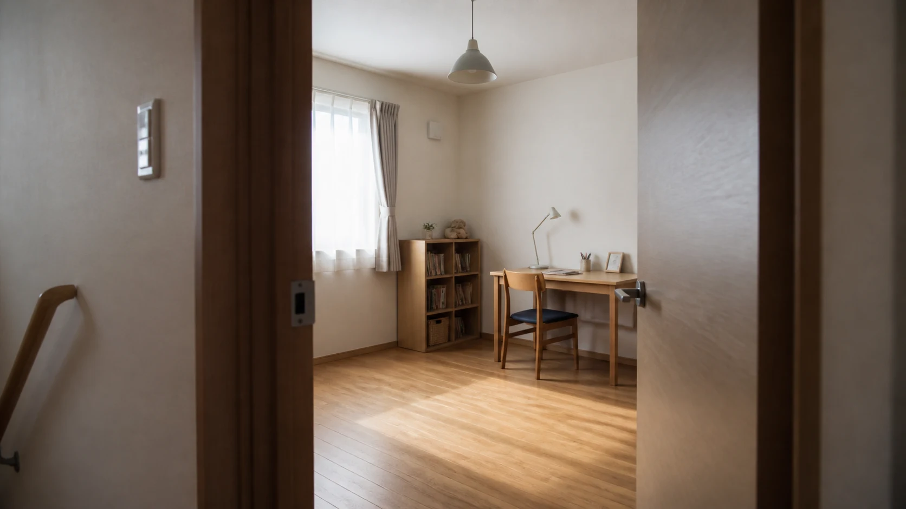
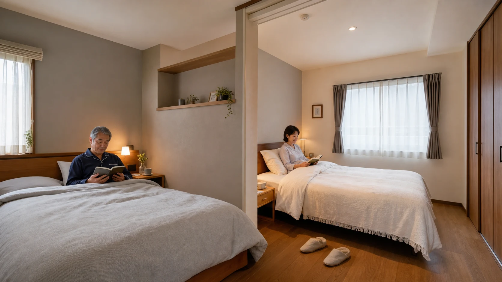
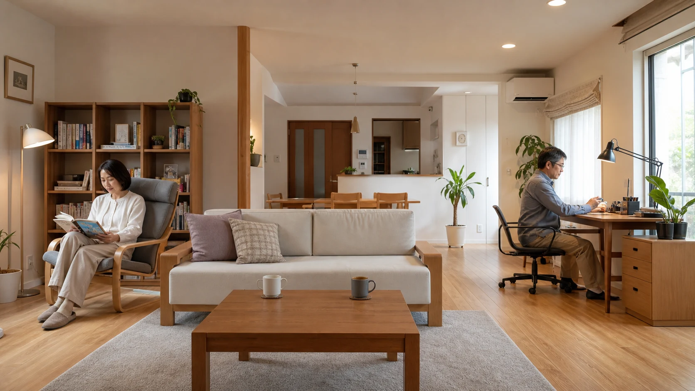

子どもの独立後、夫婦二人の時間が急に増えたと感じる方は多いのではないでしょうか。子育てのために整えた家は、間取りも生活のリズムも「家族みんなで過ごすこと」を前提につくられていたかもしれません。この記事では、寝室のあり方や居場所のつくり方を切り口に、夫婦二人の暮らしに家を合わせ直す考え方を紹介します。リフォームを急かすものではなく、夫婦で家のこれからを話す入口として読んでいただければと思います。
1. 子育てのためにつくった家、その後
子どもが小さかった頃、家づくりや部屋の使い方の多くは「子育てのしやすさ」を軸に決められていたのではないでしょうか。リビングを広く取り、子ども部屋を確保し、家族全員が同じ時間に同じ場所で過ごすことを前提にした間取りが自然に選ばれてきました。
子どもが独立すると、こうした前提が少しずつ崩れていきます。使われなくなった部屋、二人には広すぎるリビング、そして何より、夫婦二人だけで過ごす時間の長さが、これまでとは大きく変わります。これは家づくりが間違っていたということではなく、家が担う役割が、子育て期から夫婦二人の時期へと移り変わるタイミングを迎えたということです。

2. 50代から変わる住まい方
50代になると、子育て以外にも暮らしの変化が重なってきます。定年後を見据えた働き方の変化、親の介護や通院への同行、自宅で過ごす時間そのものの増加。こうした変化は、一度にすべて起こるわけではなく、少しずつ、順番もばらばらにやってきます。
子どもの独立後は、子育てを優先してきた部屋の使い方を、夫婦二人の暮らしに合わせて見直す時期でもあります。今の家で、それぞれが落ち着ける場所と、二人で過ごす場所の両方を確保できているかを考えてみましょう。
3. 寝室を分けることも、心地よさの選択肢
夫婦二人の暮らしを考えるとき、しばしば話題になるのが「寝室を分けるかどうか」です。この話題には、「夫婦仲が悪くなったのでは」というイメージがつきまとうことがありますが、実際にはそう単純な話ではありません。
就寝・起床時間、体感温度の好み、いびきや物音など、睡眠環境への希望は人によって異なります。年齢を重ねると、就寝時間や体調に関わる希望が夫婦それぞれで変わることもあります。
厚生労働省の「健康づくりのための睡眠ガイド2023」でも、成人の健康維持において睡眠の質を確保することの重要性が示されています。寝室を分けることそのものを推奨するものではありませんが、「同じ部屋で寝ることが常に正解とは限らない」という前提に立てば、寝室のあり方を夫婦で見直すことは、関係を悪化させる選択ではなく、それぞれが快適に眠り、日中を元気に過ごすための工夫として捉えることができます。

4. それぞれの居場所と、二人の共用空間
寝室を分ける・分けないにかかわらず、大切なのは「一人になれる場所」と「二人で過ごす場所」の両方が、無理なく確保されているかという点です。
- それぞれのパーソナルスペース：趣味の道具を広げられる場所、静かに過ごせる場所、オンラインでの用事に対応できる場所など。
- 二人の共用空間：一緒に食事をする場所、テレビを見る場所、会話を楽しむ場所など。
これらは「別々の部屋を新設する」ことだけを意味しません。同じリビングの中でも、一人がソファで、もう一人がダイニングテーブルで、それぞれ違うことをしながら同じ空間にいる、という過ごし方も一つの形です。大切なのは、「いつも一緒」か「完全に別々」かの二択で考えるのではなく、その時々の気分や体調に応じて距離感を調整できる余白を、家の中に残しておくことです。
将来的に、子どもが家族を連れて帰省したり、一時的に親と同居したりする可能性がある場合も、今の段階からすべてを決めてしまう必要はありません。使われていない部屋を、来客や帰省にも対応できる「余白」として残しておく考え方は、第19回「家族が集まる場所は、リビングだけじゃない。成長に合わせて『つながり方』を変えられる家へ」でも詳しく取り上げます。

5. まず夫婦で話してみる
住まいを見直す最初の一歩は、大掛かりなリフォームの検討ではなく、夫婦での対話です。次のような問いから始めてみるとよいかもしれません。
- 今の寝室、居心地はどうか
- 一人になりたいと感じる時間はあるか。そのとき、どこで過ごしているか
- 二人で過ごす時間で、大切にしたい場面はどんなものか
すぐに答えが出なくても構いません。子育て期に「家族のための家」を作ってきたように、これからは「夫婦二人のための家」を、少しずつ作り直していく。そのための対話を、今日から始めてみませんか。